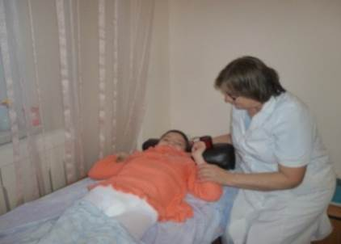
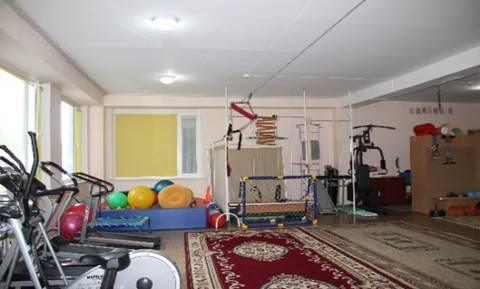
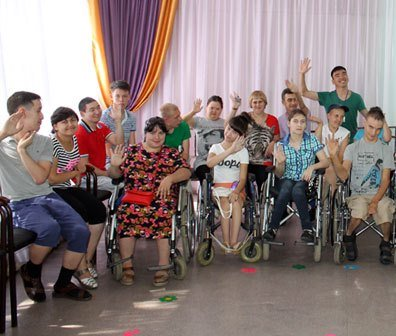
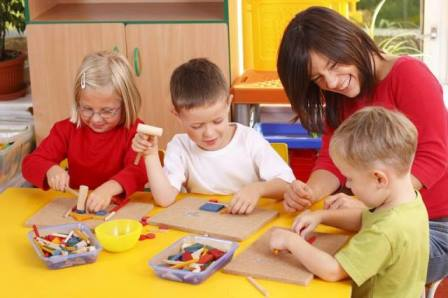
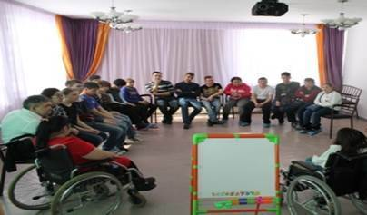
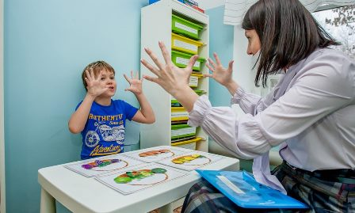

Процедурные кабинеты
Основным
направлением деятельности ООИ РЦ «Самал» является медико-социальная реабилитация. Целью медицинской
реабилитации является вторичная профилактика, т.е. предупреждение прогрессирования
заболевания, развития осложнений и рецидивов, профилактика тяжелых
функциональных нарушений.
Специалистами
отдела «Медико-восстановительной коррекции и воспитания движений» были
проведены оздоровительные мероприятия по назначениям невропатолога
(массаж, ЛФК, физиолечение), осуществлено наблюдение
за детьми в период реабилитации. Проведены профилактические мероприятия:
врачебный осмотр, консультации специалистов, мероприятия в период карантина, а
также реабилитационные мероприятия после болезни. По назначению врачей дети
прошли курс массажа, физиопроцедуры. Весной и осенью
была проведена витаминизация среди детей и персонала для профилактики
простудных заболеваний и гриппа. Осенью проведена профилактическая прививка
против гриппа. Медицинского работниками проведена санитарно-просветительская
работа по профилактике инфекционных заболеваний у детей с родителями и
персоналом (беседы, сан. бюллетень,
лекции и др.).
В Центре имеются следующие кабинеты: медицинский блок – кабинет
ЛФК, массажный, физио, ординаторская, кабинет
Биообратной связи (аппарат «Комфорт»); педагогический блок–кабинеты:
дефектологический, логопедический, Монтессори,
комната психологической разгрузки, компьютерный, кабинет арт-терапии, швейная
мастерская, музыкальный зал, спортивный зал, комнаты отдыха, спальни,
методический кабинет, библиотека, лекотека,
социальное кафе.
Физиолечение
проводится с использованием оборудования: ОКУФ, ингалятора-небулайзера,
аппарата ПОТОК (электрофорез), солевой многоразовой саморазогревающейся
грелки (парафин).
Занятия
лечебной физкультурой выполняются с использованием реабилитационного
оборудования и тренажеров: Housefit (эллипсный
тренажер), велотренажер Body, Kettler (эллипсный
тренажер), Беговая дорожка ОМА, Беговая дорожка Housefit, Беговая дорожка Fasile, Тренажер ГРОСС, Тренажер комплексный Marcy, Шведская стенка, поручень гимнастический, гимнастическая
скамейка, тренажер для развития вестибулярного аппарата, Детская беговая
дорожка, Детский Степ, Батут, Мелкий подручный спортивный инвертарь
и др.

Оказанием
психологических услуг занимались 2 высококвалифицированных психолога. Работа
психологов включала в себя индивидуальные и групповые занятия с детьми, водная
и песочная терапия, арттерапия, игровая терапия,
релаксация, групповые тренинговые мероприятия.
Специалисты отделения владеют современными методиками и технологиями
реабилитации детей, адаптируют, разрабатывают и внедряют в работу новые методы
и программы.

Социально-педагогические
услуги, предоставляемые специалистами Центра «Самал»
направлены на формирование интеллектуального развития. С этой целью созданы
программы, перспективные планы по лексическим темам, отражающие все стороны
окружающей действительности и развития процессов внимания, памяти, мышления,
коммуникации, конструктивных умений, сенсорных представлений с учетом возраста,
психических и физических возможностей. Данные услуги предоставляют воспитатели,
логопеды, дефектологи.
